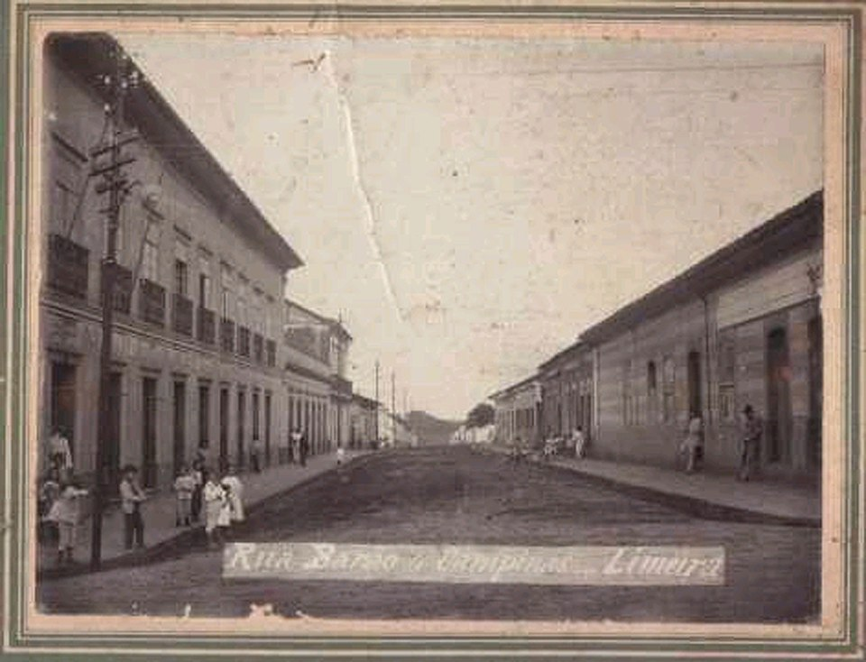
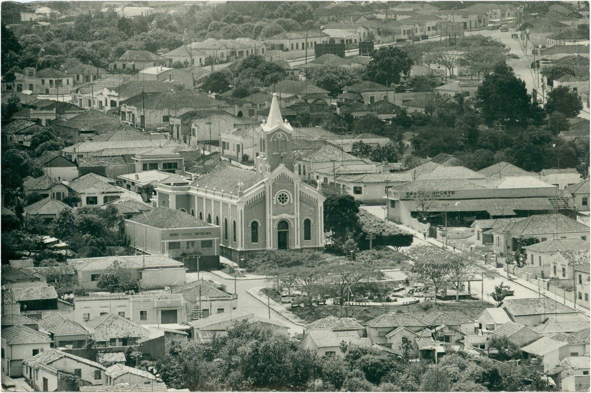
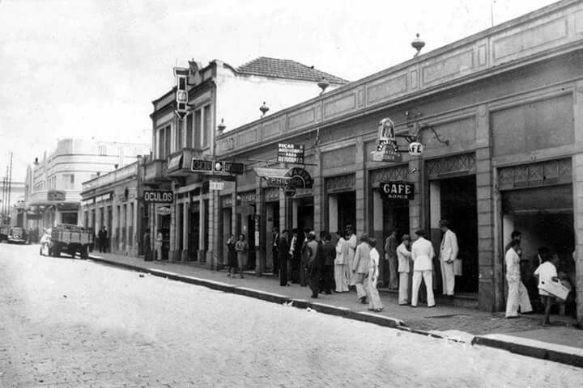

História de Limeira
A história de Limeira se inicia com a exploração econômica do interior do estado de São Paulo, mais precisamente em meados do ano de 1826, o qual marca a fundação do município. Porém compreende também um período anterior a este ano envolvendo inclusive uma lenda que tenta explicar a origem do atual nome da cidade.
Sabemos de duas historias de origem da cidade:
Origem lendária
A origem do nome envolve uma lenda popular consagrada na cidade. A tradição diz que os bandeirantes costumavam descansar num pouso situado a 27 léguas de São Paulo, às margens do ribeirão Tatuibi, nome que em tupi significa tatu pequeno. Este pouso era chamado rancho do Morro Azul, pois ficava nas proximidades de uma elevação que à distância é visto em tons azulados. Diz-se que no ano de 1781 uma caravana se dirigia aos sertões de Araraquara e estando de passagem por Limeira, acampou nas imediações do córrego do Bexiga (onde hoje está o Mercado Modelo). Nesta caravana estaria um franciscano, frei João das Mercês, que trazia consigo um picuá de limas as quais dizia curar e prevenir febres. Mas durante a noite ele começou a se sentir mal, culpando as limas as quais segundo ele teriam sido envenenadas. Acabou falecendo durante a madrugada e no dia seguinte teria sido sepultado ali mesmo, junto de seu picuá, cujas limas ninguém queria comer. Teria então brotado ali uma limeira, nascida das limas do frade. Anos depois o rancho do Morro Azul passaria a se chamar Rancho da Limeira. Pesquisas recentes nos arquivos da Igreja Católica não encontraram referências ao frei João das Mercês, reforçando o caráter lendário desta versão.
Origem histórica
Limeira surgiu em terras desbravadas próximas ao caminho conhecido como Picadão de Cuiabá, estrada de fluxo de tropas que faziam comércio e abasteciam de víveres as minas de Mato Grosso. A partir da observação de árvores-padrão (que indicavam a fertilidade das terras) que existiam ao longo da estrada em terras ainda virgens, senhores de engenho das cidades de Constituição (Piracicaba), Itu, Porto Feliz e Atibaia souberam onde estavam as melhores terras e conseguiram do governo provincial a concessão de sesmarias. Isso ocorreu de 1799 a 1820 na região.  O início da povoação se deu então com a instalação de engenhos, a vinda de senhores e escravos e a expulsão dos posseiros que havia na área. Já é possível observar que, pelo censo de 1822, na Vila Nova da Constituição (Piracicaba), a região do Morro Azul e Tatuibi (Limeira), tinha uma população de 951 pessoas livres e 546 escravos. Identifica-se nesse recenseamento, sesmeiros, proprietários de grandes engenhos, sitiantes, posseiros, ... Os caminhos que ligavam estas propriedades à capital da província eram precários, fato que levou Nicolau Pereira de Campos Vergueiro a liderar um grupo de fazendeiros como Bento Manuel de Barros, José Ferraz de Campos e outros para pedir junto ao governado a construção de uma estrada que facilitaria o escoamento da produção dos engenhos da região. Rua Barão de Campinas no início do século XX. Esta estrada foi inaugurada em 1826, ao mesmo tempo que nas margens desta estrada surgiu um núcleo habitacional, a freguesia de Nossa Senhora das Dores do Tatuibi, oficializada por lei provincial em 9 de dezembro de 1930.[1] O movimento da estrada facilitou o crescimento do comércio e de outras atividades e marca a fundação do município. O núcleo foi construído em terras doadas pelo capitão Luís Manuel da Cunha Bastos, considerado fundador do município. Em 1842 o povoado foi elevado à categoria de vila, mas só em 1844 foi instalada a câmara municipal sendo seu primeiro presidente Manuel José de Carvalho. Limeira foi elevada a categoria de cidade no dia 18 de abril de 1863. No dia 20 de abril de 1875 foi criada a comarca de Limeira.